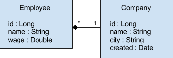

Ujorm je knihovna pro vývoj Java aplikací postavená na key-value architektuře doménových objektů, které přistupují ke svým atributům výhradně pomocí objektů zvaných Klíče. Klíč tvoří neměnný statický objekt, který je součástí doménové třídy a který poskytuje různé služby. Klíč v Ujorm nikdy neobsahuje business data - na rozdíl od podobného frameworku Joda Beans, kde atributy jsou obsaženy v objektu typu Property.
Pro popis architektury Ujo objektu doporučuji využít starší odkaz, cílem tohoto článku bude spíše demonstrovat zajímavé využití Ujo objektů na krátkých příkladech. Ukázky využívají modul ujo-core a nesouvisí přímo s dotazy na tabulky relačních databází ORM modulu. Modul core lze připojit do vlastního projektu pomocí Maven závislosti:
<dependency>
<groupId>org.ujorm</groupId>
<artifactId>ujo-core</artifactId>
<version>1.45</version>
</dependency>
Použité ukázky kódu jsou postavené na dvou entitách Employee a Company typu Ujo, každá z nich obsahuje také (generované) settery a gettery tak, aby objekt splňoval specifikaci JavaBeans.

Popis čtení a zápisu atributů JavaBeans tady přeskočíme a pustíme se rovnou do čtení a zápisu hodnot pomocí API z frameworku Ujorm.
Employee person = new Employee();
// Write:
person.set(ID, 7L);
person.set(NAME, "Pavel");
person.set(WAGE, 20.00);
person.set(COMPANY, new Company());
// Read:
Long id = person.get(ID);
String name = person.get(NAME);
Double wage = person.get(WAGE);
Company company = person.get(COMPANY);
assert id == 7L;
assert name == "Pavel";
assert wage == 20.00;
assert company != null;
Pro zkrácení kódu uvedených příkladu byly v hlavičce třídy naimportované potřebné statické Klíče použitých Ujo objektů pomocí zápisu:
import static org.Company.CITY;
import static org.Employee.*;
Z předchozího příkladu by mělo být zřejmé použití Klíčů pro přístup k atributům objektu, zatím se však nezdá, že by Klíče přinášely nějakou přidanou hodnotu - ve srovnání s POJO. O výhodách řešení se vás pokusím přesvědčit v následujících kapitolách, které popisují další vlastnosti Klíčů.
Každý Klíč obsahuje svoji defaultní hodnotu, kterou lze získat metodou Key.getDefault(). Zajímavější však je chování klíče při čtení atributu s hodnotu NULL, protože klíč každou takovou hodnotu zaměňuje automaticky za svoji defaultní hodnotu. Pokud je defaultní hodnota Klíče také NULL, je záměna nevýznamná. Pro obnovu všech defaultních hodnot tedy stačí přiřadit každému atributu hodnotu NULL podle vzoru:
Employee employee = getEmployee();
for (Key key : employee.readKeys()) {
employee.set(key, null);
}
assert employee.getWage() == 0.0 : "Default value is zero";
assert employee.getWage() == WAGE.getDefault() : "Check the default value";
Jiná varianta předchozího příkladu obnovuje pouze defaultní hodnoty číselných atributů:
Employee employee = getEmployee();
for (Key key : employee.readKeys()) {
if (key.isTypeOf(Number.class)) {
employee.set(key, null);
}
}
Metoda Ujo.readKeys() vrací všechny přímé klíče i ode všech rodičů použité třídy, a tak se obnova výchozích hodnot bude týkat také atributů případných rodičů. Pro porovnání typu hodnoty Klíče je vhodná metoda Key.isTypeOf(Class) .
Protože už víme, jak z Ujo objektu získat seznam všech jeho přímých klíčů (popis kompozitních Klíčů bude následovat), tak můžeme záměnou těla cyklu vytvořit snadno mělkou kopii objektu:
Employee source = getEmployee();
Employee target = source.getClass().newInstance();
for (Key<Ujo,?> key : source.readKeys()) {
key.copy(source, target);
}
assert source.getId() == target.getId()
Validátory jsou neměnné objekty, které je možné spojovat operátorem AND/OR a které lze vkládat volitelně do Klíče při jeho sestavení. Pokud Klíč dostane jednou validátor, tak bude navždy kontrolovat každou hodnotu v době zápisu do Ujo objektu.
Key<Employee, String> NAME = keyFactory.newKey(length(7));
Do klíče NAME jsme teď vložili validátor, který povolí zápis jména zaměstnance s maximáln délkou 7 znaků. Na následujícím příkladě vyzkoušíme zápis jednoho korektního jména a jednoho příliš dlouhého jména:
final String correctName = "1234567";
final String wrongName = "12345678";
Employee employee = new Employee();
employee.set(NAME, correctName);
try {
employee.set(NAME, wrongName);
} catch (ValidationException e) {
String expected
= "Text length for Employee.name must be between 0 and 7, "
+ "but the input length is: 8";
assert expected.equals(e.getMessage());
}
assert employee.getName() == correctName;
API validátorů nabízí podporu lokalizovaných chybových zpráv pomocí tzv. šablon.
final ValidationException exception = getException();
String template = "The name can be up to ${MAX} characters long, not ${LENGTH}.";
String expected = "The name can be up to 7 characters long, not 8.";
String result = exception.getError().getMessage(template);
assert expected.equals(result);
Každý objekt typu ValidationError má k dispozici jednu výchozí šablonu pro potřeby logování. Další příklady použití validátorů jsou k dispozici tady.
Zvažuji použití anotací z JSR 303 nad definicí Klíčů jako alternativu k přímému vkládání klíčů pomocí Java kódu - v některém z dalších verzí Ujorm.
Dva na sebe logicky navazující Klíče mohou být spojeny metodou Key.and(key), přitom výsledkem je instance tzv. kompozitního (chcete-li složeného) Klíče typu CompositeKey, který je potomkem i toho původního interface typu Key. S kompozitním Klíčem tedy lze pracovat stejně jako s Klíčem přímým - včetně zápisu a čtení hodnot doménových objektů či spojování s dalšími Klíči. Práce s kompozitním Klíčem nám přináší také nové, zajímavé vlastnosti při čtení a zápisu hodnot:
Ukázka použití:
Key<Employee,String> companyNameKey = Employee.COMPANY.add(Company.NAME);
Employee employee = new Employee();
String companyName = employee.get(companyNameKey); // !1
assert companyName == null;
employee.set(companyNameKey, "Prague"); // !2
companyName = employee.get(companyNameKey);
assert employee.getCompany() != null;
assert companyName == "Prague";
První řádek sestaví kompozitní klíč. Řádek označený prvním vykřičníkem nám vrátí název firmy zaměstnance jako hodnotu NULL, i když firma ještě nebyla vytvořena. Řádek označený druhým vykřičníkem nejdříve doplní chybějící instanci firmy a pak do ní zapíše její název.
Pokud chování kompozitních Klíčů někoho zaujalo, je možné studovat další příklady na tomto TestCase.
Pomocí Klíče, hodnoty a operátoru je možné popsat logickou podmínku Ujo objektu, pro kterou je určena třída Criterion. Objekty typu Criterion jsou neměnné serializovatelné instance, které je možné spojovat operátorem AND/OR do binárního stromu. Objekt typu Criterion slouží také v ORM modulu jako předloha pro sestavení fráze WHERE v SQL příkazech, nicméně tento objekt je zcela autonomní a můžeme ho využívat i mimo oblast ORM - například pro validování objektů.
Criterion<Employee> validator = Employee.WAGE.whereGt(100.0);
try {
validator.validate(getEmployee()
, "Minimal WAGE is: %f."
, validator.getRightNode());
} catch (IllegalArgumentException e) {
assert e.getMessage() != null;
}
V této ukázce využíváme Criterion pro kontrolu, že zaměstnanec má vyšší mzdu jak 100 (jednotek).
Hlavní význam Criterionu však zůstává v jeho schopnosti předat popis podmínky jiným modulům, které pak mohou nabízet nějakou vlastní implementaci řešení.
Další ukázka představuje jinou variantu předchozího příkladu a slouží pro filtrování kolekce zaměstnanců, jejichž firma má sídlo v Praze. Na ukázce vidíme, že do Criterionu mohou vstupovat také kompozitní Klíče:
List<Employee> employees = COMPANY.add(CITY)
.whereEq("Prague")
.evaluate(getEmployees());
for (Employee employee : employees) {
System.out.println(employee);
}
assert employees.size() == 4;
Je užitečné vědět, že hodnotu Criterionu může být také Klíč:
List<Employee> employees = COMPANY.add(CITY)
.whereEq(Employee.NAME)
.evaluate(getEmployees());
assert employee.size() == 1;
Druhý příklad filtruje všechny zaměstnance, jejichž jméno se shoduje s názvem města (sídla) jejich firmy. Jinak souhlasím s každým, kdo si myslí, že to není úplně typický příklad :).
Ujorm poskytuje užitečnou třídu pro řazení kolekcí zvanou UjoComparator. Pro velkou skupinu požadavků není třeba implementovat novou třídu (na rozdíl od řazení kolekce JavaBenas i když v Java 8 přináší zjednodušení), stačí jen dodat tovární metodě požadovaný seznam klíčů spolu s informací o směru řazení, viz metoda Key.descending(). Uvedená metoda vytváří vždy novou instanci Klíče s příznakem sestupného řazení.
List<Employee> employees = UjoComparator.of
( COMPANY.add(CITY)
, NAME.descending())
.sort(getEmployees());
for (Employee employee : employees) {
System.out.println(employee);
}
Metoda descending() vytváří ve skutečnosti nový kompozitní Klíč s jediným členem, který poskytuje informaci o sestupném řazení. Modelování sestupného řazení se využívá také v ORM modulu.
Každý přímý Klíč má v rámci class-loaderu svoji unikátní instanci podobně jako položka výčtového typu Enum. Aby bylo možné klíče serializovat, je třeba je vložit do klíčenky reprezentované třídou KeyRing. Tyto klíčenky však nejsou pro nás úplně nové, protože výše použitá metoda Ujo.readKeys() vrací (ve výchozí implementaci) právě tento typ.
final KeyRing<Employee> keyRing1, keyRing2;
keyRing1 = KeyRing.of(Employee.ID, Employee.COMPANY.add(Company.NAME));
keyRing2 = service.serialize(keyRing1);
assert keyRing1 != keyRing2 : "Different instances";
assert keyRing1.get(0) == keyRing2.get(0) : "The same direct keys";
assert keyRing1.get(1).equals(keyRing2.get(1)) : "The equal composite keys";
assert new Employee().readKeys() instanceof KeyRing : "readKeys() returns the KeyRing";
Poslední ukázka popisuje import z textového formátu CSV (Coma Separated Value), kde se nabízí možnost importovat atributy i pomocí kompozitních Klíčů, a tak lze importovat také atributy relačních entit. Popis CSV sloupců se definuje výčtem Klíčů (importovaného) Ujo objektu. Obsah textového CSV souboru s hlavičkou následuje:
id;name;companyId
1;Pavel;10
2;Petr;30
3;Kamil;50
Java kód pro import CSV souboru:
Scanner scanner = new Scanner(getClass().getResourceAsStream("employee.csv"), "utf-8");
UjoManagerCSV<Employee> manager = UjoManagerCSV.of
( Employee.ID
, Employee.NAME
, Employee.COMPANY.add(Company.ID));
List<Employee> employes = manager.loadCSV(scanner, this);
assert employes.size() == 3;
assert employes.get(0).getId().equals(1L);
assert employes.get(0).getName().equals("Pavel");
assert employes.get(0).getCompany().getId().equals(10L);
Pokud na místo seznamu Klíčů použijeme třídu typu Ujo, importuje se obsah CSV souboru podle všech přímých Klíčů dané třídy. Pořadí statických Klíčů Ujo je ve frameworku Ujorm garantováno a je shodné s pořadím statických fieldů uvedených v doménové třídě - na rozdíl od nedefinovaného pořadí fieldů z JavaBeans.
Modul ujo-core z frameworku Ujorm poskytuje různé další nástroje pro obecné použití, samostatným tématem je pak použití Ujo objetků v ORM. Jako motivační aplikace slouží Demo Hotels, která si zaslouží v budoucnu nějaký podrobnější popis vybraných částí. Snad se to podaří napravit v nějakém samostatném článku někdy příště.
Všechny vzorové příklady jsou součástí projektu Ujorm a hlavní třída je k dispozici tady.